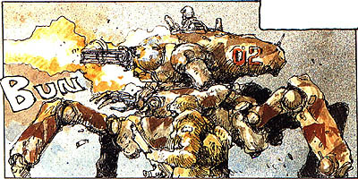

| Depagg Mobile Gun Carrier |
|
|  | |
General and Technical Data |
|
|
Model Number:MG-04 Unit type: mobile gun carrier Armament: 1x 6 barrel 30mm gatling |
|
| Technical and Historical Notes | |
|
A radical model at the time, the now aging Depagg mobile gun carrier has been outdated both by mobile suits, and by the Federal Forces new Fanfan hovercraft. An arachnaform mobile walker designed to fight rioting civilians in an urban theatre, the Depagg is lightly armored and armed, but highly maneuverable by a tanks standards. Even in the era of mobile suits it holds its ground as far as maneuverability is concerned, but its single gatling turret is unable to do anything to a Zaku at all but point blank range.
Now decomissioned in favor of the Fanfan, the Depagg is used primarily by the LMC for protection of Von Braun, its maneuverability an asset in a Lunar environment. |
 RPG quick stats sheet
RPG quick stats sheet